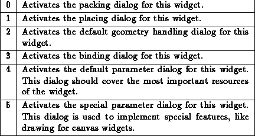

The procedures ``XFConfig.<WidgetClass>0-5'' call the various parameter setting dialogs. The number indicates the type of the dialog. It is possible to specify higher numbers than 5. If a procedure representing a dialog between 0 and 3 does not exist, the default XF dialog is used.
Nr. & Purpose

The procedures that implement the parameter setting dialog can use various functions that XF provides to make the writing of widget dialog easier. The procedures ``XFTmpltToplevel'' and ``XFElementInit'' create a standard parameter setting dialog. The procedures get several parameters that are explained in the source code. For various resource types, there are procedures that create appropriate dialog elements (e.g. ``XFElementColor''). To enable the undo feature, the procedure ``XFElementSave'' is called, getting the widget name of the configured widget, the class of that widget, and a list of resource names.